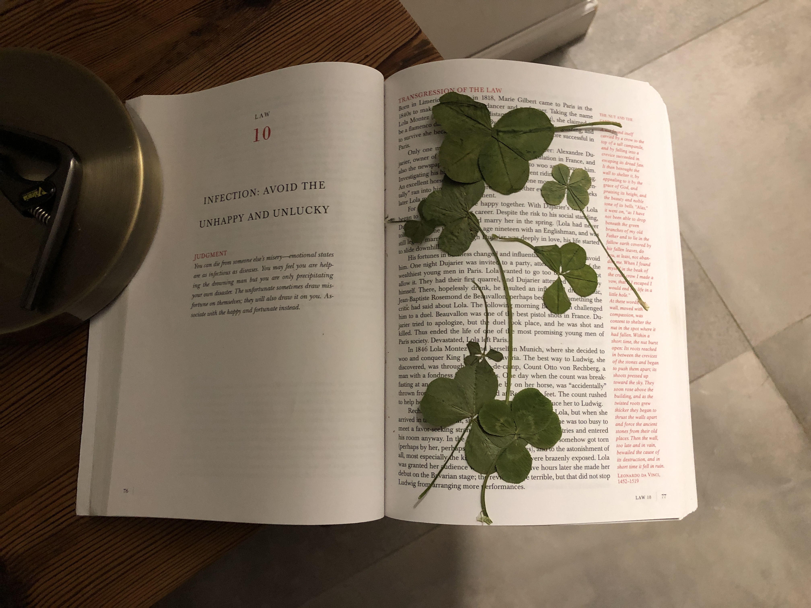

There are important items in this story which you need to know about
| Name and photo | What |
|---|---|
Timo's Clovers |
Timo is lucky and he usually finds many 4-leafed clovers. He gave one to all WWC members. He also gave some to other people. People who have received a clover
|